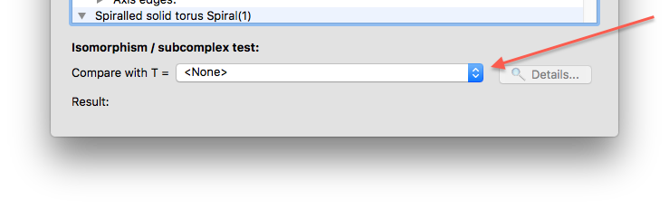
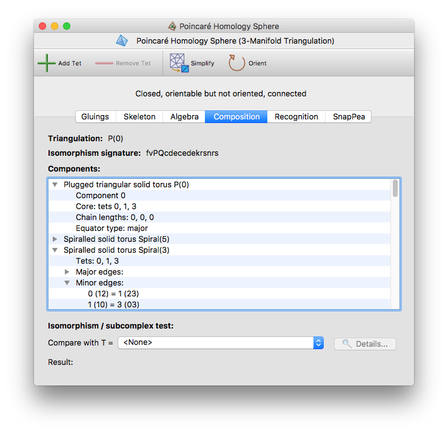
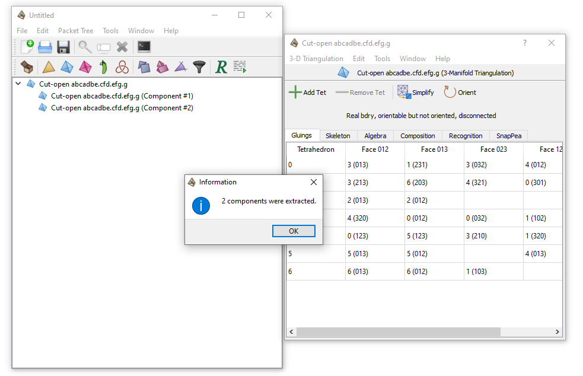
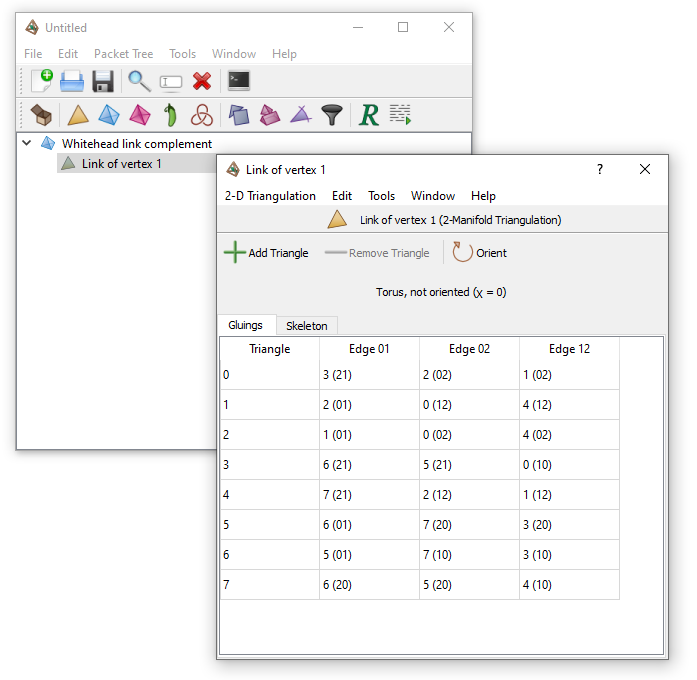

Analysis | |
| Prev | Triangulations | Next |
Regina offers a wealth of information about triangulations, spread across the many different tabs in the triangulation viewer. Here we walk through the different properties and invariants that Regina can compute.
An important feature of 2-manifolds, as opposed to other dimensions, is that the underlying manifold is easy to recognise from its triangulation. For connected 2-manifold triangulations, Regina will display the exact 2-manifold at the top of the triangulation viewer, as illustrated below.
For orientable 2-manifolds, the genus refers to the number of handles (e.g., the torus has orientable genus 1). For non-orientable 2-manifolds, the genus refers to the number of crosscaps (e.g., the Klein bottle has non-orientable genus 2).
Regina will also display the Euler characteristic at the top of the triangulation viewer, marked with the symbol χ. It will show this even for disconnected surfaces also.
For 3-manifold triangulations, Regina will try to identify the manifold automatically using a range of relatively fast techniques, though a result is no longer guaranteed. If Regina does identify the underlying 3-manifold, this will be shown on the recognition tab. If you do not see a result immediatey, you can of course use all of the machinery that Regina offers to probe harder and seek an answer.
For triangulations in dimension ≥ 4, Regina does not currently have any automated recognition routines—you will need to manually work with Regina's various combinatorial and algebraic tools to seek an answer.
At the top of each triangulation viewer is a header listing some basic properties of the triangulation (circled in red below).
In this header, the following words might appear:
- Closed
Signifies that the link of every vertex is a sphere.
This means that the triangulation has no boundary facets (e.g., no boundary triangles in dimension 3, or no boundary tetrahedra in dimension 4), and that the triangulation also has no ideal vertices.
- Ideal bdry
Signifies that at least one vertex of the triangulation is ideal. An ideal vertex is one whose link is a closed manifold but not a sphere.
You can locate any ideal vertices using the skeleton viewers.
- Real bdry
Signifies that the triangulation contains one or more boundary facets (i.e., boundary edges, triangles or tetrahedra for a 2-, 3- or 4-manifold respectively).
For 2-manifolds, this is just written as with boundary, since ideal boundary components do not appear until dimension ≥ 3.
- Orientable / non-orientable / oriented / not oriented
The words orientable or non-orientable indicate whether or not the triangulation represents an orientable manifold.
If the triangulation is orientable, Regina will also tell you whether or not it is oriented; that is, whether the vertex labels on each top-dimensional simplex (e.g., the labels 0,1,2,3 on each tetrahedron in a 3-manifold) induce a consistent orientation for all top-dimensional simplices in the entire triangulation.
If you need a consistent orientation for all top-dimensional simplices but you see orientable but not oriented instead, you can fix this by orienting your triangulation.
- Connected / disconnected
The words connected or disconnected indicate whether or not the triangulation forms a single connected component.
- Invalid triangulation
Signifies that the triangulation is “broken” to the point where Regina cannot do any serious work with it. This never happens in dimension 2, but it can happen with 3- and 4-manifold triangulations, and this can be for one of two reasons:
some vertex link is neither a closed manifold nor a topological ball;
as a result of the gluings between top-dimensional simplices, some edge is identified with itself in reverse, or (in 4-D only) some triangle is identified with itself under a non-identity reflection or rotation.
You can locate the offending vertex, edge and/or triangle using the skeleton viewers. If the triangulation is invalid, no other information will appear in the banner.
- Empty
Signifies that the triangulation contains no simplices at all. In this case, no other information will appear in the banner.
The Gluings tab shows how the facets of the top-dimensional simplices (i.e., edges of triangles, faces of tetrahedra or facets of pentachora for 2-, 3- and 4-manifolds respectively) are glued to each other in pairs.
The facet gluings are presented in a table.
For a d-manifold triangulation,
each row represents a d-simplex,
and the (d+1) columns on the right
represent the (d+1) facets of each
d-simplex.
The d-simplices are numbered 0,1,2,…,
and the (d+1) vertices of each
d-simplex are numbered
0,1,…,d.
Each cell of this table represents a single facet of a single
d-simplex. For instance, in the
3-manifold example illustrated above, the cell circled in red
represents face 123 of tetrahedron 1 (that is, the
triangular face formed from vertices 1,2,3 of tetrahedron 1).
The contents of the cell show how the facet is glued. In the example
above, the circled cell contains 8 (312),
indicating that face 123 of tetrahedron 1 is glued to
face 312 of tetrahedron 8 using the affine map that
matches vertices 1,2,3 of tetrahedron 1 with vertices
3,1,2 of tetrahedron 8 respectively.
The same gluing can be seen from the opposite direction in the row
for tetrahedron 8.
An empty cell indicates that a facet is not glued to anything at all; that is, the facet forms part of the boundary of the manifold. In the table above there are two boundary triangles: face 013 of tetrahedron 0, and face 123 of tetrahedron 4. In our example these join together to form the torus boundary of the figure eight knot complement.
You can modify the triangulation by typing new facet gluings directly into this table. See the section on modifying triangulations for details.
The Skeleton tab holds two smaller tabs offering combinatorial information about the skeleton and dual skeleton of the triangulation.
On the left of the Skeleton→Skeletal Components tab, you will see the total number of faces of each dimension in the triangulation. This includes vertices, edges, triangles, tetrahedra (for 3- and 4-manifolds), and pentachora (for 4-manifolds). On the right of the tab, you will see the total number of components and boundary components in the triangulation, as well as the Euler characteristic.
Next to each total count is a button.
By pressing this, you can see more detailed
information about each of the faces, components or boundary components.
A full explanation of this detailed information
appears below.
(The exception is the top-dimensional faces, i.e., the
d-simplices in a
d-manifold triangulation—they have
no view button because you can examine them in detail on the
gluings tab instead.)
For 2-manifolds, the Euler characteristic is simply marked χ, and has its usual meaning (vertices − edges + triangles). For 3- and 4-manifolds, Regina computes two Euler characteristics:
χ (Triangulation) measures Euler characteristic in the purely combinatorial sense: that is, the alternating sum of the number of faces of each dimension in the triangulation.
χ (Manifold) measures Euler characteristic in a more topological sense: this assumes that we have made the manifold compact by truncating all ideal vertices and replacing them with real boundary components. For 3-manifolds, if the triangulation is invalid then we likewise assume that invalid vertices and the midpoints of invalid edges are truncated. For 4-manifolds, if the triangulation is invalid then Regina will not compute χ (Manifold) at all.
For a compact 3-manifold or 4-manifold triangulation, both these Euler characteristics should be the same.
For each facial dimension k,
if you click on the button next
to the total count of k-faces, you will see a
table that lists details of each individual
k-face of the triangulation.
This table contains four columns:
- Face #
Identifies each
k-face with an individual face number.For each facial dimension
k, thek-faces are numbered consecutively 0,1,2,…. That is, each triangulation has vertices numbered 0,1,2,…, as well as edges numbered 0,1,2,…, as well as triangles numbered 0,1,2,…, and so on.- Type
Gives some basic information about the
k-face. Text you might see here includes:- Bdry
Indicates that the
k-face lies entirely within a real boundary component of the triangulation.- Ideal
Indicates an ideal vertex in a 3- or 4-manifold triangulation, i.e., a vertex whose link is a closed manifold but not a sphere.
For an ideal vertex in a 3-manifold triangulation, this column will also identify the precise surface of the vertex link (e.g., torus, Klein bottle, etc.). For an ideal vertex in a 4-manifold triangulation, you can always triangulate the vertex link and study it using all of Regina's 3-manifold machinery.
- Invalid
Indicates that this is an invalid face. This can only occur in a 3- or 4-manifold triangulation (not in dimension 2).
An invalid vertex is one whose link is neither a ball nor a closed manifold. An invalid edge is one that is identified with itself in reverse, or (for 4-manifolds) has a link that is neither a sphere nor a ball. An invalid triangle (for 4-manifolds only) is one that is identified with itself under a non-identity reflection or rotation.
If any face is invalid, then the entire triangulation will also be marked as invalid.
If the
k-face does not have any of the properties listed above, then the second column of the table will be left empty.There is one exception to this: for triangular faces in 3-manifolds, Regina will always use the second column of the table to describe the combinatorial shape of the triangle. Possible shapes include:
- Triangle
No vertices or edges of the triangle are identified.
- Scarf
Two vertices of the triangle are identified; all edges are distinct.
- Parachute
All three vertices of the triangle are identified; all edges are distinct.
- Möbius band
Two edges of the triangle are identified to form a Möbius band (causing all three vertices to be identified); the third edge remains distinct.
- Cone
Two edges of the triangle are identified to form a cone (causing two vertices to be identified); the third edge and third vertex remain distinct.
- Horn
Two edges of the triangle are identified to form a cone and all the third vertex is identified with the others; the third edge remains distinct.
- Dunce hat
All three edges of the triangle are identified, some with orientable and some with non-orientable gluings.
- L(3,1)
All three edges of the triangle are identified using non-orientable gluings; note that this forms a spine for the lens space L(3,1).
- Degree
The third column of the
k-face table lists the degree of each face. This is the number of individualk-faces of individual tetrahedra or pentachora (for 3-manifolds or 4-manifolds respectively) that are identified together to make thisk-face of the triangulation.- Triangles / Tetrahedra / Pentachora (vertices)
The fourth and final column of the
k-face table indicates precisely whichk-faces of which tetrahedra or pentachora come together to form each overallk-face of the triangulation. An example for edges in a 3-manifold triangulation might be0 (31), 1 (01), 0 (02), which indicates a degree 3 edge obtained by identifying edges 31 and 02 of tetrahedron 0, and edge 01 of tetrahedron 1. Here “edge 31” means the edge running from vertex 3 to vertex 1 of the tetrahedron, and so on.The order of vertices in this list is important: the previous example also shows that vertex 3 of tetrahedron 0, vertex 0 of tetrahedron 1, and vertex 0 of tetrahedron 0 all represent the same end of the edge.
For edges of 3-manifolds and triangles in 4-manifolds, the order of tetrahedra or pentachora respectively is also important: tetrahedra or pentachora are written in the order in which one sees them when walking around the edge link or triangle link respectively.
If you click on the button beside the component count, you will see a table listing details of the individual connected components of the triangulation.
The columns in this table are:
- Cmpt #
Identifies each connected component with an individual component number, starting from 0 and counting upwards.
- Type
Gives some additional information about the individual component, similar to the basic properties that you can view for each triangulation. Text you might see here includes:
- Invalid
Indicates that this component is invalid. A component is considered invalid if it contains any invalid vertices, edges or triangles.
- Real / Ideal
For valid components of 3-manifold and 4-manifold triangulations, the text Real indicates that the the component contains no ideal vertices, and the text Ideal indicates that the component contains at least one ideal vertex. Recall that an ideal vertex is a vertex whose link is a closed manifold but not a sphere.
- Orbl / Non-orbl
Indicates whether the component is orientable or non-orientable.
- Size
Gives the number of top-dimensional simplices (i.e., triangles, tetrahedra or pentachora for a 2-, 3- or 4-manifold triangulation respectively) that belong to each connected component.
- Triangles / Tetrahedra / Pentachora
Lists the individual top-dimensional simplices that belong to each connected component.
If you click on the button beside the total count of boundary components, you will see a table listing the individual boundary components of the triangulation. This includes:
real boundary components, which in a 2-, 3- or 4-manifold triangulation are formed from one or more boundary edges, triangles or tetrahedra respectively;
ideal boundary components, which consist of a single vertex whose link is a closed manifold but not a sphere;
invalid vertices, which only appear in 4-manifold triangulations—these consist of a single invalid vertex that does not already belong to some other boundary component (e.g., a vertex whose link is an ideal 3-manifold triangulation).
The columns in this table are:
- Cmpt #
Identifies each boundary component with an individual boundary component number, starting from 0 and counting upwards.
- Type
Either Real, Ideal, or Invalid vertex, as outlined above.
This column is not shown for 2-manifold triangulations, which can never have ideal or invalid vertices.
- Size
For a real boundary component in a 2-, 3- or 4-manifold triangulation, this gives the number of edges, triangles or tetrahedra respectively that make up the component. For an ideal boundary component or an invalid vertex, this shows the degree of the corresponding vertex.
- Edges / Triangles / Tetrahedra / Vertex
For a real boundary component in a 2-, 3- or 4-manifold triangulation, this lists the individual boundary edges, triangles or tetrahedra respectively that it contains. For an ideal boundary component or an invalid vertex, this lists which individual tetrahedron or pentachoron vertices are identified to form the overall ideal or invalid vertex of the triangulation.
Edges, triangles, tetrahedra and vertices are described in the same manner as in the individual face viewers.
The Skeleton→Graphs tab is used to visualise the large-scale structure of the triangulation.
Regina can display a variety of graphs about the triangulation. Simply select which graph you want to see in the drop-dox box, as indicated below.
The graphs that Regina displays include:
- Dual graph
The dual graph (which is illustrated above) gives a visual representation of how the top-dimensional simplices of the triangulation are glued together. This is sometimes known as the edge pairing, face pairing or facet pairing graph (for 2-, 3- and 4-manifolds respectively).
Every node of this graph represents a top-dimensional simplex; that is, a triangle, tetrahedron or pentachoron in a 2-, 3- or 4-manifold triangulation respectively. Every arc of this graph represents a gluing between two such simplices along a pair of facets; that is, a pair of edges, triangles or tetrahedra for 2-, 3- and 4-manifolds respectively.
Nodes will be labelled by the corresponding simplex numbers (though these labels can be turned off). The dual graph of a closed
d-manifold triangulation is always (d+1)-valent; for bounded triangulation some nodes may have smaller degree (but never larger).- Tree decomposition
A tree decomposition (illustrated below) models the dual graph using a rooted tree. Regina uses these tree decompositions in some of its fixed-parameter tractable algorithms [Bur15].
Each node of the tree decomposition is called a bag, and contains a set of nodes of the dual graph. The width of the tree decomposition is one less than the size of the largest bag; for fast algorithms, this width should be as small as possible. Regina will display both the width and the number of bags above the graph itself.
Regina does not guarantee to find a tree decomposition of the smallest possible width (i.e., it does not compute the precise treewidth of the dual graph, which is an NP-hard problem). Instead it uses fast heuristics that are found to produce relatively low-width tree decompositions in practice.
- Nice tree decomposition
This is a variant of the tree decomposition that is less concise, but more useful in practice for algorithms.
In a nice tree decomposition, the root bag is empty, and the leaf bags each contain just one node of the dual graph. Moreover, every non-leaf bag either (i) has exactly one child bag, which it clones and then either adds or removes exactly one node of the dual graph; or (ii) has exactly two identical child bags, which it clones precisely.
As with tree decompositions, Regina will display both the width of the nice tree decomposition and the number of bags that it contains. Typically the width will be the same as for the (plain) tree decomposition above, but the number of bags may be significantly larger (though still linear in the overall size of the triangulation).
The Algebra tab holds several smaller tabs that describe different algebraic invariants of the triangulation.
If the triangulation contains ideal vertices, these invariants will be computed assuming the ideal vertices have been truncated, leaving a small boundary component where each ideal vertex used to be.
Caution
For 3-manifold triangulations, there is no guarantee that invalid edges (edges glued to themselves in reverse) will be handled correctly. In particular, the projective plane cusps they produce may be ignored.
For 4-manifold triangulations, if the triangulation is invalid for any reason—in particular, if it has invalid edges or triangles—then Regina will not attempt to compute any algebraic invariants at all.
The Algebra→Homology & Fund. Group tab presents several homology groups of the triangulation (on the left side of the panel), as well as the fundamental group (on the right side of the panel).
The homology groups on the left include the first homology group H1(M), and the second homology group H2(M). For 3-manifolds (but not 4-manifolds), several additional groups will be shown: H1(M, ∂M), the relative first homology group with respect to the boundary; H1(∂M), the first homology group of the boundary; and H2(M ; Z2), the second homology group with coefficients in Z2.
The fundamental group on the right will be presented as a set of generators and relations. Regina will also try to recognise the common name of this group (though the recognition code is fairly naïve); if it can then the common name (such as “Z2”) will be displayed above the generators and relations.
Regina attempts to simplify the presentation as far as it can (using small cancellation theory and Nielsen moves). However, if this is not satisfactory then there are further things you can try:
If you have GAP (Groups, Algorithms and Programming) installed on your system, then you can use GAP to simplify the group presentation by pressing the button. You can try this more than once if you like: sometimes GAP finds a better presentation when run a second or third time.
If you seem to be stuck in a local “well”, you can try to escape by pressing the button. This will attempt to multiply old relators together in a moderately intelligent way to build new relators, which might be more useful for later simplifications. This process has been found particularly useful when trying to prove that a group is trivial.
The button will make the group presentation larger—sometimes much larger. After pressing this button, you should simplify the presentation again before trying anything else. You can press the button to simplify the presentation using Regina's own code, or you can press as described above.
Warning
If you press the button for a group presentation that is already very large, then the increase in size could be enormous—so enormous that it could crash Regina entirely by exceeding the available memory on your machine.
Tip
If you cannot read the superscript digits in the fundamental group presentation, or if you cannot read the blackboard-bold Z symbols in the homology groups, try disabling unicode symbols in Regina's settings.
Tip
If Regina is having trouble starting GAP, you can tell it how to start GAP in the tools options.
If you wish to see a full transcript of the conversation between Regina and GAP, start Regina from the command-line by running regina-gui. The entire conversation will be shown in the text console where you ran regina-gui command.
For 3-manifold triangulations, the Algebra→Turaev-Viro tab allows you to compute Turaev-Viro state sum invariants with arbitrary parameters. As of Regina 5.0, these invariants are computed using exact arithmetic in an appropriate cyclotomic field (so, unlike previous versions, there is no need to worry about floating-point inaccuracies).
Each Turaev-Viro invariant is defined by a set of
initial data:
an integer r ≥ 3 and a
root of unity q0 of degree 2r
(see Section 7 of [TV92] for details).
For even values of
r,q0 must be a primitive (2r)th root of unity, and Regina computes only one invariant (since all such roots yield essentially the same information).For odd values of
r,q0 may either be a primitive (2r)th root of unity or a primitiverth root of unity. Regina computes both invariants, and marks them as “odd” and “even” respectively.
To compute a Turaev-Viro invariant, simply enter the integer
r into the box provided and press
Calculate.
Regina will compute the corresponding invariant(s) as requested,
and display them in the table below as elements of the corresponding
cyclotomic field.
These field elements are expressed as polynomials in ζ, where
ζ denotes the primitive root of unity q0 from the initial data.
Caution
Only small values of r
should be used, since the time required to calculate the
invariant grows exponentially with r.
For 3-manifold triangulations, the Algebra→Cellular Info tab contains further information on the standard and dual CW-decompositions, a variety of homology groups and mappings, the Kawauchi-Kojima invariants of the torsion linking form, and comments on where the triangulation might be embeddable.
As with the other algebraic invariants described above, all information here refers to the compact manifold obtained by truncating any ideal vertices and leaving real boundary surfaces intact.
The information here includes:
- Cells
Lists the number of cells of each dimension for a standard CW-decomposition of the manifold. This is a list of four numbers, counting the 0-cells, 1-cells, 2-cells and 3-cells respectively.
For a closed triangulation (no ideal vertices), this is simply the number of vertices, edges, triangles and tetrahedra. For an ideal triangulation this takes into account the truncation of ideal vertices, and is therefore a little more complex.
- Dual cells
Lists the number of cells of each dimension in the dual CW-decomposition. As before, this is a list of four numbers that count the 0-cells, 1-cells, 2-cells and 3-cells in order.
- Euler characteristic
Gives the Euler characteristic of the manifold, as computed from the CW-decompositions.
- Homology groups
Lists the homology groups of the manifold with coefficients in the integers. The four groups H0, H1, H2 and H3 are listed in order.
- Boundary homology groups
Lists the homology groups of the boundary of the manifold, again with coefficients in the integers. The three groups H0, H1 and H2 are listed in order.
- H1(∂M → M)
Since the boundary is a submanifold of the original manifold, there is an induced map on the first homology group. This item on the Cellular Info tab describes some properties of this induced map.
- Torsion form rank vector
Given an oriented 3-manifold
M, there is a symmetric bilinear function tH1(M) x tH1(M) —> Q/Z where tH1(M) is the torsion subgroup of H1(M). It is computed in this way: letxandybe 1-dimensional torsion homology classes. Thennxis the boundary of some 2-cyclez(transverse toy) for some integern. The torsion linking form ofxandyis the oriented intersection number ofzandy, divided byn.Kawauchi and Kojima gave a complete classification of such torsion linking forms [KK80]. Regina computes the torsion linking form, and implements the Kawauchi-Kojima classification.
This item on the Cellular Info tab is the first of the three Kawauchi-Kojima invariants of the torsion linking form on the torsion subgroup of H1: the torsion form rank vector, which lists the prime power decomposition of the torsion subgroup of H1(
M). For example, if H1(M) is a direct sum ofncopies of Z20 andmcopies of Z18, then the torsion form rank vector would be: 2(mn) 3(0m) 5(n) since the group is isomorphic tomZ2 +nZ2^2 + 0Z3 +mZ3^2 +nZ5.Note that the Kawauchi-Kojima invariants are only computed for connected orientable manifolds.
- Sigma vector
This item is the second of the three Kawauchi-Kojima invariants described above: the 2-torsion sigma vector, which is relevant for manifolds in which H1 has 2-torsion. It is an orientation-sensitive invariant, where the orientation is chosen so that the first tetrahedron in the triangulation is positively-oriented with its standard parametrisation.
As above, the Kawauchi-Kojima invariants are only computed for connected orientable manifolds.
- Legendre symbol vector
This is the third of the three Kawauchi-Kojima invariants of the torsion linking form: the odd p-torsion Legendre symbol vector, originally constructed by Seifert, which is relevant for manifolds in which H1 has odd torsion.
Again, the Kawauchi-Kojima invariants are only computed for connected orientable manifolds.
- Comments
This final item on the Cellular Info tab comments upon where the manifold might embed. In particular, it attempts to make deductions about whether the manifold might embed in R3, S3, S4, or a homology sphere. If the manifold is orientable it tests for the hyperbolicity of the torsion linking form. It also performs the Kawauchi-Kojima 2-torsion test, useful for determining if a manifold with boundary does not embed in any homology 4-sphere.
The information in this field might change in future releases of Regina (i.e., it might become more detailed as more tests become available). Currently it examines the homology, the Kawauchi-Kojima invariants and some other elementary properties, and uses C. T. C. Wall's theorem that 3-manifolds embed in S5.
These comments are provided for both orientable and non-orientable manifolds. In the non-orientable case they may provide additional information about the embeddability of the orientable double cover.
The paper [Bud08] illustrates how the information on this tab can be used in studying embedding problems.
For 3-manifold triangulations, the Composition tab offers more detailed information about the combinatorial structure of the triangulation.
The upper portion of the composition tab is for testing
combinatorial isomorphism, or testing whether one triangulation is a
subcomplex of another. Simply select some other
triangulation T from the drop-down box
(indicated by the arrow in the diagram below).

Each time you select a different triangulation
T in the drop-down box,
Regina will immediately test for any of the following relationships:
whether this triangulation and
Tare isomorphic (i.e., identical up to a relabelling of tetrahedra and their vertices);whether this triangulation is isomorphic to a subcomplex of
T(i.e.,Tcan be obtained from this triangulation by adding more tetrahedra and/or gluing more faces together, again with a possible relabelling);whether
Tis isomorphic to a subcomplex of this triangulation.
The relationship, if any, will be reported immediately beneath the drop-down box (as illustrated above). If a relationship is found, you can click on the button for the precise relabelling (i.e., the mapping between tetrahedron labels and between vertices in each tetrahedron).
In the lower portion of the composition tab is a large box containing details on the combinatorial composition of the triangulation. Here Regina will search for well-structured features within the triangulation, and deduce from them what it can. Sometimes it can recognise the construction and completely identify both the triangulation and the underlying 3-manifold; other times it yields little or no useful information.
Tip
If your aim is just to determine the underlying 3-manifold by any means possible, see the recognition tab instead. The recognition tab combines the results of this combinatorial recognition with slower but stronger routines, including 3-sphere, 3-ball and solid torus recognition, census lookup, and more.

In this composition box you will find the following information:
Regina knows about many infinite families of triangulations. If your triangulation belongs to one of these families then Regina will detect this and report the results here. Regina is particularly good at recognising well-structured triangulations of Seifert fibred spaces and graph manifolds.
If it does recognise your triangulation, Regina will name the 3-manifold and also the triangulation itself. See [Bur03] and [Bur07c] for details on the various families of triangulations and what their names and parameters mean.
An isomorphism signature is a compact sequence of letters, digits and/or punctuation that identifies a triangulation uniquely up to combinatorial isomorphism. Regina will report the isomorphism signature for your triangulation here.
Every triangulation has an isomorphism signature (even disconnected triangulations or triangulations with boundary). The main features of isomorphism signatures are that they are fast to compute, and that two triangulations have the same signature if and only if they are isomorphic. See [Bur11b] and [Bur11c] for details.
To convert an isomorphism signature back into a triangulation, you can either create a new triangulation from a signature, or import a list of isomorphism signatures. Be aware that the resulting triangulation might not use the same tetrahedron and vertex labels as the original.
Isomorphism signatures are case-sensitive (i.e., upper-case and lower-case matters). To copy the isomorphism signature to the clipboard, simply select the line in the box and choose →.
Like isomorphism signatures, a dehydration string is a short sequence of letters from which you can reconstruct your triangulation. Only some triangulations have dehydration strings (they must be connected with no boundary triangles and ≤ 25 tetrahedra), and they are not unique up to isomorphism (so relabelling tetrahedra might change the dehydration string). If it exists, the dehydration string will be reported here.

Dehydration strings first appeared in early censuses of hyperbolic 3-manifolds. See [CHW99] for details.
To convert a dehydration string back into a triangulation, you can either create a new triangulation from its dehydration, or import a list of dehydration strings. Be aware that the resulting triangulation might not use the same tetrahedron and vertex labels as the original.
As with isomorphism signatures, you can copy a dehydration string to the clipboard by selecting the line in the box and choosing →.
The remainder of the composition box describes combinatorial building blocks within the triangulation. Regina knows about several families of building blocks (such as layered solid tori), and it will search for these within the triangulation. If it finds any building blocks that it recognises then it will give details here, including any parameters for the blocks and where they occur within the triangulation.
See [Bur03] and [Bur07c] for details on the various families of building blocks that Regina understands.
For 3-manifold triangulations, the Recognition tab attempts to identify the underlying manifold through a variety of techniques, and also computes other high-level properties of the triangulation. It offers a combination of slow but exact procedures (such as 3-sphere, 3-ball and solid torus recognition), and fast "opportunistic" procedures such as combinatorial recognition and census lookup.
For large triangulations, many of these properties are
not automatically calculated (since some algorithms require
worst-case exponential time).
If a property is listed as Unknown, press
the corresponding button
(and be prepared to wait):
The result will appear as soon as the calculation is done:
You might see different properties appear on the Recognition tab, according to whether your triangulation is closed, ideal, or has real boundary. The different properties that you might see include:
- 3-sphere
Determines whether this is a triangulation of the 3-sphere. This uses a complete, exact 3-sphere recognition algorithm, i.e., it guarantees to terminate with the correct result. The algorithm is highly optimised, and incorporates techniques from [Rub95], [Rub97], [Tho94], [JR03], [Bur10b], and [BO12].
This property is only shown for closed 3-manifolds.
- 3-ball
Determines whether this is a triangulation of the 3-dimensional ball. Again this uses a complete, exact algorithm that guarantees to terminate with the correct result. The algorithm is a simple modification of the 3-sphere recognition algorithm as described above.
This property is only shown for 3-manifolds with real boundary triangles and no ideal vertices.
- Solid torus
Determines whether this is a triangulation of the solid torus, or equivalently, the unknot complement. Once again this uses a complete, exact algorithm that guarantees to terminate with the correct result [BO12].
This property is shown for ideal triangulations as well as 3-manifolds with real boundary triangles. For ideal triangulations, the ideal vertices will be treated as though they were truncated.
- Zero-efficient
Indicates whether the triangulation is 0-efficient. A triangulation is 0-efficient if its only normal spheres and discs are vertex linking, and if it has no 2-sphere boundary components. If a closed orientable triangulation is not 0-efficient (and has more than two tetrahedra), this indicates that either the triangulation is non-minimal or the underlying 3-manifold is non-prime. See [JR03] for details on 0-efficiency.
This property is only shown for Regina's native triangulation packets, not its hybrid SnapPea triangulation packets.
- Splitting surface
Determines whether the triangulation has a splitting surface. A splitting surface is a compact normal surface consisting of precisely one quad per tetrahedron and no other normal (or almost normal) discs. See [Bur03] for details.
This property is only shown for Regina's native triangulation packets, not its hybrid SnapPea triangulation packets.
- Irreducible
Determines whether the triangulation represents an irreducible manifold. A closed 3-manifold is irreducible if every embedded sphere bounds a ball.
This property is only shown for valid triangulations of closed, orientable and connected 3-manifolds.
- Haken
Determines whether the triangulation represents an Haken manifold. A closed orientable irreducible 3-manifold is Haken if it contains an embedded closed two-sided incompressible surface.
This property is only shown for valid triangulations of closed, orientable, connected and irreducible 3-manifolds.
- Strict angle structure
Determines whether the triangulation supports a strict angle structure. This is an angle structure in which all angles are strictly positive; see the chapter on angle structures for details.
This property is only shown for ideal triangulations with no real boundary triangles.
- Hyperbolic
Attempts to certify that the underlying 3-manifold is hyperbolic or non-hyperbolic. Any result that is shown here will be rigorous (i.e., based on exact arithmetic, and not subject to floating point error).
For example, Regina might certify that a 3-manifold is hyperbolic because it finds a strict angle stucture [FG11], or Regina might certify that a 3-manifold is non-hyperbolic because it passes solid torus recognition as described above.
This property is only shown for ideal triangulations with no real boundary triangles.
- Manifold
This field, which is always shown at the bottom of the panel, combines the exact algorithms above with the combinatorial recognition routines from the composition tab, in a multi-pronged attempt to conclusively identify the underlying 3-manifold. If the 3-manifold can be determined by any of these methods, it will be listed here.
- Census
Regina ships with several large census databases, containing hundreds of thousands of 3-manifold triangulations. This field, also shown at the bottom of the panel, will search for your triangulation across all of these databases. Regina will search for any isomorphic copy (i.e., it does not matter if your tetrahedra and/or vertices have been relabelled).
Currently these databases include: closed prime
P2-irreducible 3-manifold triangulations (≤ 11 tetrahedra, both orientable and non-orientable) [Bur11a]; cusped hyperbolic 3-manifold triangulations (≤ 9 tetrahedra, both orientable and non-orientable) [Bur14c]; closed hyperbolic 3-manifold triangulations (the Hodgson-Weeks census) [HW94]; plus hyperbolic knot and link complements (as tabulated by Joe Christy).
Tip
None of the tests on this tab will attempt a connected sum decomposition, so if the 3-manifold is non-prime then it will probably not be recognised. Try running a connected sum decomposition first, and then recognising each of the prime summands.
Tip
Unlike the exact algorithms such as 3-sphere recognition and solid torus recognition (which may be slow but will work in all settings), the "opportunistic" combinatorial recognition and census lookup will benefit from a well-structured triangulation. If Regina does not recognise the 3-manifold, try simplifying the triangulation, or performing elementary moves.
SnapPea is an excellent piece of software with a strong focus on hyperbolic 3-manifolds, originally by Jeffrey Weeks and now further developed by Marc Culler and Nathan Dunfield as the Python-based SnapPy. Portions of the SnapPea kernel are built into Regina, which allows Regina to compute information related to hyperbolic structures.
Warning
Be aware that much of the information gained through the SnapPea kernel is inexact. In particular, it may be subject to numerical instability or floating point error. If you wish to rigorously certify that a manifold is hyperbolic, see the recognition tab.
There are two ways in which you can use SnapPea within Regina:
If you are working with one of Regina's native 3-manifold triangulation packets, you can view some basic information (the solution type and the hyperbolic volume) through the triangulation SnapPea tab, as described below.
If you are working with one of Regina's hybrid SnapPea triangulation packets, you can view richer information on hyperbolic structures (including tetrahedron shapes), and you can perform Dehn fillings on the cusps. See the chapter on SnapPea triangulations for details.
For Regina's native 3-manifold triangulations, the SnapPea tab will ask SnapPea to solve for a complete hyperbolic structure, and will then display the following basic summary information:
- Solution Type
This describes the type of solution that SnapPea found to the hyperbolic gluing equations. For explanations of the possible solution types, see the chapter on SnapPea triangulations.
- Volume
This gives the volume of the underlying 3-manifold, along with the estimated number of decimal places of accuracy. This accuracy measure is an estimate only (based on the differences between terms in Newton's method).
If you would like a richer interface with the SnapPea kernel, you can press the button marked Convert to a SnapPea triangulation. This will build a new hybrid SnapPea triangulation packet, which will appear beneath the original (native Regina) triangulation in the packet tree. See the SnapPea triangulations chapter for further information about this conversion process, or about what you can do with SnapPea triangulations in general.
Regina implements some high-level algorithms for decomposition manifolds into “atomic pieces”. These include the following:
If your triangulation is disconnected, you may wish to break it into its connected components. To do this, select →. You must open the triangulation for viewing before you can do this.
Regina will create several new triangulations, one for each connected component. These will be added beneath the original in the packet tree. Your original (disconnected) triangulation will remain unchanged.

For 3-manifolds, if your triangulation is closed and connected, Regina can decompose it into a connected sum of prime, non-sphere 3-manifolds. To do this, select → from the menu. You must open the triangulation for viewing before you can do this.
Again, Regina will create several new triangulations, one for each prime summand. These will be added beneath the original in the packet tree, and your original triangulation will remain unchanged. If your original triangulation is a 3-sphere then no prime summands will be produced at all.
With a few exceptions (RP3 and the twisted and non-twisted products S2×S1), each of the new triangulations is guaranteed to be 0-efficient (i.e., they will have no non-vertex-linking normal spheres). The underlying algorithm is based on Jaco-Rubinstein crushing [Bur14b] [JR03], and uses 3-sphere recognition to ensure that none of the summands are trivial.
If your triangulation is non-orientable and contains an embedded two-sided projective plane, then the connected sum decomposition algorithm might fail (but it might still succeed) [Bur14b]. If it does fail then Regina will detect this and inform you.
Caution
Connected sum decomposition can be very slow for larger triangulations, since the underlying normal surface algorithms have worst-case exponential running time.
In a 3-manifold or 4-manifold triangulation, if you wish to examine a vertex link in more detail then you can explicitly construct it by selecting → from the menu. This will build the link of the selected vertex as a new 2-manifold or 3-manifold triangulation respectively.
You will be asked which vertex link you wish to construct, as illustrated below. For each available vertex, the drop-down list will show the vertex number (as seen in the skeleton viewer), along with details of the individual tetrahedron or pentachoron vertices that combine to form that particular vertex of the triangulation.
Once the vertex link is constructed, the resulting 2-manifold or 3-manifold trianguation will appear beneath the original 3-manifold or 4-manifold triangulation in the packet tree.

Likewise, if you wish to study a boundary component of a 4-manifold in detail, you can explicitly construct it by selecting →. This will build the selected boundary component as a new 3-manifold triangulation.
You will be asked which boundary component you wish to construct, as illustrated below. You can triangulate both real boundary components (formed from boundary tetrahedra) and ideal boundary components (represented by vertices whose links are closed 3-manifolds but not spheres).
In the drop-down list, boundary components will be listed using their boundary component numbers, as seen in the skeleton viewer. In addition, each real boundary component will include details of its constituent boundary tetrahedra, and each ideal boundary component will include details of the ideal vertex whose link it represents.
Once the boundary component is constructed, the resulting 3-manifold trianguation will appear beneath the original 4-manifold triangulation in the packet tree.
| Prev | Contents | Next |
| Triangulations | Up | Modification |